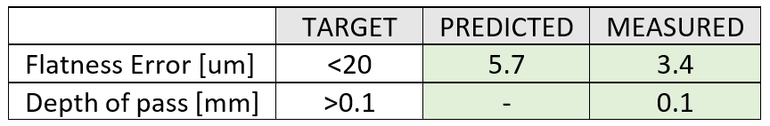
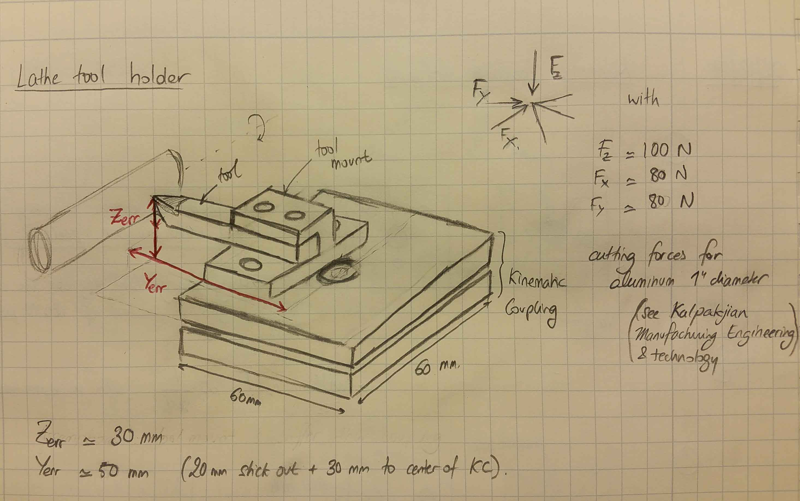
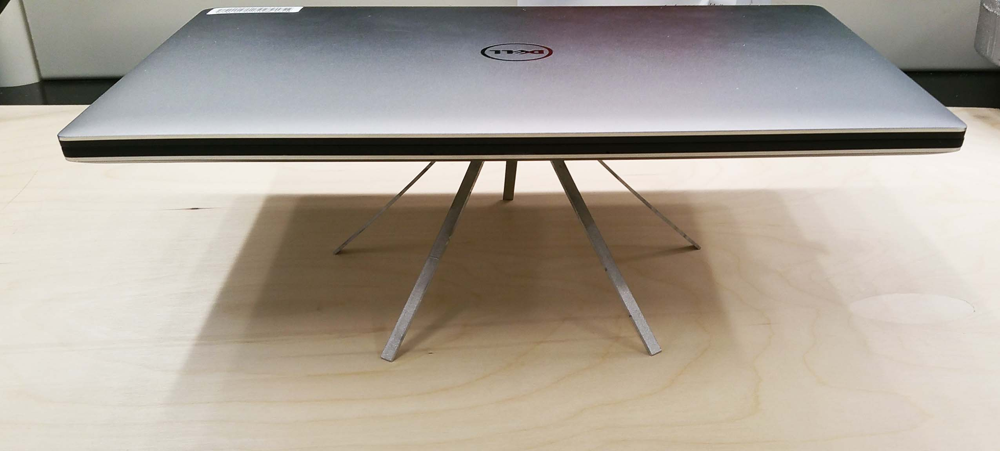
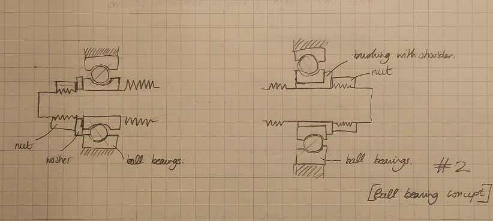
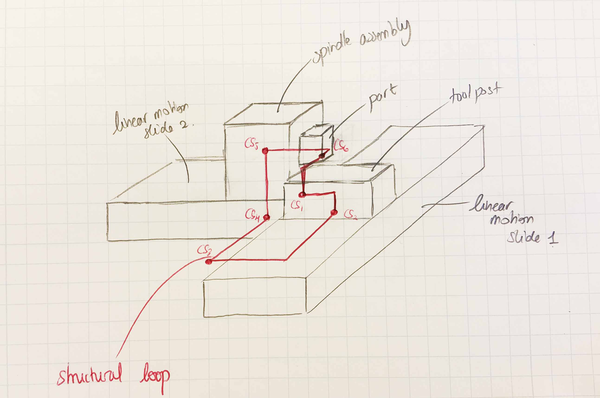

Precision Machine Design
Apply precision machine design process to create a T-based lathe
2.77 - Precision Machine Design is an advanced course taught by Prof. Alex Slocum that examines design, selection, and combination of machine elements to produce a robust precision machine or system. Introduces process, philosophy and physics based principles of design to improve and enable renewable power generation, energy efficiency, and manufacturing productivity. Topics include linkages, power transmission, screws and gears, actuators, structures, selection of materials, joints, bearings, error apportionment, and error budgeting. Considers each topic with respect to its physics of operation, mechanics (strength, deformation, thermal effects) and accuracy, repeatability, and resolution.
Final Project: T-based Lathe
The goal of this work was to design a T-based lathe to face a 5/8” diameter aluminum part with a maximum flatness error of 20 micron with a depth of pass of 0.1 mm.

Hardware Modules
Over the course of the class, I used the assignments to learn and practice using fundamental physics to deterministically design 4 machine elements. The experience gained from designing and building these 4 machine elements was then applied to make a T-based lathe.
Kinematic Coupling
DESIGN
The kinematic coupling was designed to be used as a tool mount for a T-based lathe. The requirements for this tool mount are such that I could turn a 1" diameter aluminum part at maximum material removal rate (MMR) with a tolerance of 20 microns in diameter and length. Based on the cutting loads on the tool at maximum removal rate, a kinematic coupling diameter of 50mm and shown in the drawing the coupling should be preloaded with 600N. Under these condition, the prescribed repeatability was 10 microns in the Z-axis, and 24N/micron for the Z-axis stiffness.
Under these requirements, several kinematic coupling concepts where considered. A 3 grooves kinematic coupling with either 3 balls, 3 crowned cones or 3 canoe balls. In addition, steel, aluminum and delrin were also considered as base materials. The canoe ball design using aluminum or steel were the only one to withstand the stresses without failing while providing the necessary stiffness. A 3 grooves, 3 canoe-balls, aluminum kinematic coupling with a groove depth of 10mm, canoe-ball major and minor radii of 60mm and equivalent ball diameter 12mm was chosen as a design meeting all the above mentionned requirements.

Drawing of the tool mount concept
ANALYSIS
From the Kalpakjian, Manufacturing Engineering and Technology I estimated the cutting forces on a lathe for aluminum. I was then able to compute the analyze the different concepts in terms of required preload to sustain the maximum cutting loads, the stiffness of the coupling, the deflection at the tip of the tool, and the contact stresses in the coupling necessary to achieve the requirements. (see design spreadsheet).
From the analysis, the concepts using steel balls or crowned cones would not be able to sustain the cutting loads without yielding at the grooves and the balls which would drastically reduce the stiffness and repeatability of the coupling. The selected concept was thus the aluminum canoe balls with major and minor radii of 60 mm respectively, which fulfilled all the requirements in terms of stiffness, tool deflection and safety factor. The contact ellipse area remained smaller than three times the distance to the edge of the canoe ball preventing increased stress concentration.
The coupling will have to be preloaded to 600 N (200 N on each balls) to maintain contact under the maximum cutting forces. To preload the coupling to such a value different concepts were explored: magnets, screw with a spring, bolted screw only and flexures. The concepts that would easily achieve 600 N of preload was the bolted screw concept. A bolted torque to preload force analysis was conducted using the resources from Shigley’s, Mechanical Engineering Design which revealed that to preload the coupling to 600 N a torque of 2.2 Nm had to be applied on the ¼-20 bolt (including friction of the bolt to the plate).
FABRICATION
The design was made using a 1/2" aluminum stock and, steel bolts for mounting the canoe balls and preloading the coupling. The coupling top and bottom plate where then cut using a waterjet. The canoe balls where then machined using a CNC 3-axis mill and a 3/16” ball end mill and the grooves were also machined on the mill with a 90 deg 1/2” V-bit. To mount the canoe balls on the kinematic coupling top plate, the canoe balls were tapped, and 10-32 bolts were used.
The assembly process was the following, the canoe balls were slightly bolted on the top plate, the KC was assembled and the preload screw was then added to preload the entire coupling using a torque wrench. Then, the canoe balls were securely tightened to the top plate. The preload could then be removed and the kinematic coupling taken off and on repeatably.
TESTING
The kinematic coupling was then tested for stiffness, angular and translation repeatability to ensure that it satisfied all the functional requirements.
STIFFNESS TESTS (see design spreadsheet)
For the Z-axis stiffness, the coupling was loaded using the ¼-20 center preload bolt, a torque wrench and a dial indicator with a resolution of 0.0001” from which we could discern a change of 0.00002”. In that configuration (during preloading), the canoe balls and the bolt are in series, so the canoe balls see the same load as the bolt and thus the torque wrench. The coupling was loaded up to 5 Nm, so 1.37 kN and the measured Z stiffness was 128 N/um which is close to the predicted 210 N/um. The difference in stiffness could come from the fact that the canoe balls had been drilled and tapped reducing their stiffness. Similarly, the X-axis stiffness was measured using the same dial indicator and a digital scale. The measured stiffness was 145 N/um which is also close to the anticipated 210 N/um. The difference would also be explained by the same reasons as above.From these stiffness values, the applied load at the tool tip and the tool position, the deflection of the tool under maximum cutting loads were computed and compared to the requirements. The deflection of the tool would be of 7.9 um, 4.5 um and 3.6 um in the Z (height), Y(radial) and X(thrust) direction respectively which satisfies our requirements of 20 um (radial and thrust) and 50 um (tool height).
REPEATABILITY OF THE COUPLING (see design spreadsheet)
To test the repeatability of the coupling, the coupling was fixtured on the vice on the mill, the same dial indicator as the stiffness test was used and the top plate of the coupling was removed, attached and preloaded before taking the measurement. From 10 tests, the measured repeatability was of 2.3 um in the Z direction and 2.5 um in the X direction which is much better than the requirement of 50 um. For the angular repeatability, a laser was securely bolted on the coupling and a sheet of paper placed 16.8m away was used to collect the angular repeatability of the coupling. A dozen of measurements were made and stayed within the size of the laser spot resulting in an angular repeatability of 0.027 deg and 0.026 deg on the Z-axis and X-axis respectively. The X-axis repeatability would affect the Z height difference and fulfilled the requirement of being less than 0.05 deg.
DISCUSSION
The kinematic coupling fulfilled all the design requirements in terms of stiffness and repeatability.A concern that was brought up during peer review is that the threaded holes in the canoe ball and variable stresses on the coupling due to the cutting loads might bring the predicted safety factor of 1.5 during MRR closer to 1, wear out the coupling and reduce it's repeatability. To remediate that issue, the safety factor can be increased by using canoe balls with higher radii and press fitting them in the top plate rather than threaded them.Elastically Averaged Coupling
DESIGN
For this system, I wanted to make use of elastic averaging to build a platform to place my coffee mug, computer, and water bottle that would be stable for uneven grounds. For this I explored different concepts: platforms and supports made from wood, acrylic, aluminum, as well as the number of supports. The number of supports would bring more stability against tipping but would over-constrain the system unless they are compliant enough.
To fulfill the design intent, I listed the functional requirements that the platform (see spreadsheet for full list and concept comparison) had to satisfy:
- All the supports of the platform must contact the ground that can have a 2mm height difference (delta in the picture on the left) between each support under the minimum payload which is the weight of my water bottle/ coffee mug empty (around 0.5 kg)
- The platform won’t yield under the weight on my laptop, a full water bottle (payload of 1.2kg) when only three of the supports are loaded (worst case scenario)
- Minimize tilt of the platform when placed on uneven ground (2mm height difference) so that the coffee, or water bottle doesn’t slip nor fall over.
- The platform shouldn’t deflect more than 5 mm under the maximum payload
5 legged platform
ANALYSIS
For the analysis, I applied beam bending theory and remained under the assumption of small deformations (about 5 mm of max deflection over a beam of length 100 mm). The most interesting parts was to get an estimate of the obstacle that the platform could account for under the minimum payload and the fact that there is a self-helping mechanism that reduces the tilt of the platform when its sees an obstacle under payload (see design spreadsheet).
The aluminum and delrin platforms with 5 supports performed the best. The delrin platform is a better design than the aluminum design since the thickness dimension (most critical dimension along with the length) of its supports is much larger. This means that under the same manufacturing process, the delrin design won’t require as tight tolerances as for aluminum. However, delrin stock not being available, I built the aluminum concept under tight tolerances.
FABRICATION
The design was made using a 1/4" aluminum stock and, steel bolts for mounting the supports of the platform. All the parts were cut using a waterjet and post-machined on the mill. In order to get achieve the tolerances on the supports beam thickness, the waterjet offset was calibrated using a high quality of cut to minimize taper. Then the parts were sanded to get rid of the remaining taper.
TESTING
The platform was then tested for stiffness and obstacle height it could accommodate to ensure that it satisfied all the functional requirements.
STIFFNESS TESTS: The platform was loaded using a spring scale attached using a zip tie to the platform. In that configuration, the spring scale and the zip are in series, so the platform sees the same load as the zip tie and thus the spring scale. The platform deflection was measured using a dial indicator. The platform was loaded up to 0.7 kg and the measured vertical stiffness was 4.78 N/mm which is very close to the predicted stiffness of 4.28 N/mm. (left and middle picture)

STABILITY OF THE PLATFROM UNDER AN UNEVEN GROUND: One of the platform support was placed on an obstacle with increasing height. The platform was then loaded using a spring scale until all the supports contact the ground. The load at which the all the supports contact the ground was recorded. For a obstacle height of 2.6 mm the measured load was 0.49 kg and for an obstacle of 5.7 mm the measured load was 1.25 kg. This matches our predictions stating that for a 0.5kg load, the obstacle height would be 2.30 mm and for a 1.2kg the obstacle height would be 4.97 mm. (right picture)
DISCUSSION
The platform fulfilled all the requirements and performed close to what was predicted. Under the typical use case (see platform loaded with computer during peer review session) the platform was able to conform to uneven ground without plastically deforming. The vertical stiffness of the system also depends on the material on which it stands because of the friction of each leg on the surface.

Linear Motion Slide
DESIGN
The linear motion slide is designed to be used for a desktop T-based lathe. After exploring different concepts that would be suitable for this application including, twin rails, dovetails, box ways, roller/rails as well as ball/groove designs I chose the dovetail LMS. It is a simple design that requires only one preload mechanism, yields high stiffnesses and a design that I have never built before.
To fulfill the design intent, I listed the functional requirements that the LMS had to satisfy (see design spreadsheet):
- Travel Range of 100mm
- Facing operations with a flatness of 100um over 20mm
- Small torque to drive the LMS (less than 500 Nmm, easy to turn the handle by hand)
- Not fail under cutting loads
ANALYSIS
From the Kalpakjian, Manufacturing Engineering and Technology I derived the cutting forces on a lathe for aluminum. I applied beam bending theory, beam shearing, and beam axial compression to do the stiffness analysis of the LMS (see design spreadsheet):
- In more depth, for the angular stiffnesses, I assumed a linear load distribution on the contact areas, found the pressure magnitude and computed the angle deflection assuming a distributed stiffness on the contact areas.
- Next, I did an HTM analysis on the LMS, the carriage and the tool to find the errors gains from the LMS deflection on the tool tip, putting each reference frame at the center of stiffness of each element considered.
- For the accuracy of the system, I used the stiffness calculations, HTM analysis and cutting loads to compute the tool deflection under roughing cutting loads and geometric errors (flatness from manufacturing process).
- For the repeatability, I estimated it from the wear equation and PV analysis as well as the change in tool deflection when the cutting loads change up to 50% (using the same error gain analysis from the HTM analysis).
- From the analysis, I was able to size each component in the dovetail system: rail size, carriage, bearing pads, gibs, preload mechanism (Belleville washers) to fulfill all the functional requirements.
CONCEPT EXPLORATION
I then explored different concepts that would be suitable for this application including, twin rails, dovetails, box ways, roller/rails as well as ball/groove designs. I then selected the dovetail rails and twin rails concept to do the analytic model and predict their performance.
From the analysis, I was able to understand the trade-offs of each design.
- The dovetail design is very stiff but will be very sensitive to the manufacturing since any “bump” on the rail of the carriage will impose a large normal force, thus the force required to move the linear slide will increase drastically. Also preloading the system with gibs will not be an easy task.
- The twin rail design is much more compliant especially in roll unless the footprint (size) of the LMS is increased significantly (diameter of the rails and spacing between the rails). However, the compliance of the system and the quasi-kinematic design make it easier to manufacture, assemble and less sensitive to geometric errors of the LMS. In addition, having the tool closer to the center of stiffness (and increasing the tool height to give some clearance for cutting the part) will help alleviate the error motions from the roll stiffness of the LMS.
I then went on and made a sketch models of each design and tested them in terms of stiffness and geometric errors to validate my analytical model. From the analysis and the sketch models, I selected the dovetail LMS design for the ease of preloading the rails, the increased overall stiffness of the system.
FABRICATION
Most of the fabrication was done using a mill. The carriage and the rail were made from aluminum stock, using a dovetail cutter. The gibs were made from brass stock. The teflon pads were made on the waterjet and press-fitted in the carriage. For the dovetail brass gib, I first made it using angle blocks but during assembly, there was an angular mismatch from the dovetail brass gib and the rail (line contact). To fix that mismatch, I fixtured the gib in the carriage and used the dovetail cutter to get the right angle. For the next iteration, I will definitely machine the dovetail gib having it bolted on the carriage.
TESTING
The LMS was tested for angular and translation stiffness, as well as angular accuracy to ensure that it satisfied all the functional requirements (see design spreadsheet that includes all the experimental results).
STIFFNESS TESTS:
For the Y and Z stiffness the LMS was positioned on the mill and the deflection was measured using a dial indicator. For the Y stiffness a digital scale was used to load the LMS but for the vertical stiffness body weight was used to load the LMS and a weight scale was used to record the body weight load on the LMS.
The measure Z-stiffness (vertical) was of 7.7 N/um which matches the predicted value of 11 N/um (stiffness mainly from Teflon bearing pads). On the contrary, the measured Y-stiffness of 24.3 N/um was almost an order of magnitude less from the predicted value of 423 N/um. The measured value is also several orders of magnitude higher than the preload springs stiffness. I added some oil on the rails to get a sense on the contact area between the dovetail gib and the rail, which turned out to be a small patch rather than the entire area. This contact area difference explains the reduced stiffness value.
For the angular stiffnesses, I had incorporated a mount to apply the loads at a set distance from the carriage and measured the motion of the laser pointer on a sheet 16.8m away from the carriage.The predicted angular stiffnesses were derived using the translation stiffnesses so measured the pitch, and roll stiffness 5.9 and 4.7 Nm/mrad matched the predicted values of 7 Nm/mrad. Similarly, since the yaw stiffness is derived from the y-stiffness there was a discrepancy between the measure yaw stiffness 13.7 Nm/mrad and the predicted yaw stiffness of 173 Nm/mrad. However, if we use the measured y-stiffness to derive the yaw-stiffness we get a value of 11 Nm/mrad which is much closer to the measured yaw stiffness.
ANGULAR GEOMETIC ACCURACY OF THE LMS:
To test the angular geometric errors of the LMS, it was fixtured on the mill, mounted with a laser and the LMS was moved back and forth and the laser motion was marked on a sheet 16.8 m away from the carriage. The measured angular errors were:
- Yaw Error: 0.5mrad --> 27.5um tool tip associated error (predicted 56 um)
- Pitch Error: 0.9mrad --> 31.5um tool tip associated error (predicted 25 um)
- Roll Error: 0.1mrad --> 3.5um tool tip associated error (predicted 25 um)
The predicted values were computed assuming an accuracy of 0.001” on the mill (flatness error). The manufactured LMS fulfilled the functional requirements in terms of geometric errors.
DISCUSSION
I am very satisfied with the dovetail LMS and its performance, knowing that it only requires less than 10N when preloaded to move back and forth. Oiling the rails and using Teflon pads definitely helped getting such low friction on the slide. Using more compliant gibs such as delrin might be easier to manufacture and improve the lateral and yaw stiffnesses since it will conform the the rail after being preloaded.
Leadscrew
DESIGN
The leadscrew is designed to be used for actuating the LMS for a desktop T-based lathe. I explored different concepts that would be suitable for this application considering different bearing layouts, leadscrew size, and materials. After considering, bushing, thrust bearings and ball bearings concepts with different layouts, I settled on a ball bearing concept with a back to back configuration (see sketch on the right)

To fulfill the design intent, I listed the functional requirements that the leadscrew had to satisfy (see design spreadsheet):
- Travel Range of 100mm
- Comfortable driving torque less than 500 Nmm (about 1kg at 50mm, cheap stepper motor rated torques)
- Resolution less than 100 um (considering stepper motor resolution of 2 deg)
- Axial Stiffness above than 0.5 N/um (under finishing pass cutting loads less than 20 um deflection)
- Safety factor of 2 against failure from buckling, yielding, fatigue.
- No backlash in the nut
- Thermally stable design (even though the leadscrew won’t be running at high speeds)
ANALYSIS
For the analysis, I looked at (see design spreadsheet):
- The required driving torque using the screw equation, cutting loads ,friction of the carriage on the rails and friction at the bearing blocks on the leadscrew.
- The axial and bending stiffness of the leadscrew (beam under compression and pin-pin beam), as well as the bushings and bearings (hertz contact).
- Look at the backdriveability (screw equation condition)
- Stress analysis on the leadscrew from cutting loads and misalignment.
- Geometric errors due to misalignment of the leadscrew (force displacement on a pin-pin beam, resulting in a load on the carriage --> displacement at the tool tip)
- Load induced errors at the tool tip due to leadscrew’s assembly axial stiffness and cutting loads.
FABRICATION
Most of the fabrication was done using the lathe. The bushings were made on user a delrin rod and the leadscrew was also turned down on the lathe. The leadscrew was indicated using a dial indicator to find the high points so that when it had to be rechucked for the second operation we could place the high points at the same location (minimizing radial error from 3-jaw chuck). The threads on the leadscrew where then added using a M6x1.0 die.
TESTING
For this module, I tested the following characteristics: Axial stiffness of the leadscrew assembly, Driving torque to move the carriage, Carriage error motions Z- Axis and Y-axis, Lead Error (see design spreadsheet that includes all the experimental results).
STIFFNESS TESTS:
For this measurement, I used a digital load scale, a dial indicator (0.0002” resolution) with the assembly fixtured in the mill. The measured stiffness was 2.6 N/um which matches the predicted stiffness of 5.6 N/um.
DRIVING TORQUE
For this measurement, I used a spring scale on the handle (52 mm in diameter) and recorded the load at which the handle starts to move. This measurement actually considers the static friction and not the dynamic one making it a more conservative value. The measured torque 128 Nmm matched the predicted one of 145 Nmm. The LMS is very easy to move!
GEOMETRIC ERRORS
For the lead error as well as the carriage error motions measurements, I used the dial indicator with the LMS fixtured on the mill. I had the carriage travel and measured the error on the dial indicator. For the lead error, I couldn’t measure any error on the dial indicator for half a revolution. Similarly for the geometric errors, they were on the order of the rail flatness errors measured last week ( about 30 um) showing that any misalignment or bowing in the leadscrew didn’t affect the motion of the carriage significantly.
DISCUSSION
The bearing layout and modified leadscrew fulfill the design requirements. The custom anti-backlash system enables the cutting tool to cut in both direction withtout losing the preload nor increasing the driving torque.
T-based Lathe
DESIGN
The final project was to design a T-based lathe to face a 5/8” diameter aluminum part with a maximum flatness error of 20 micron with a depth of pass of 0.1 mm. T-based lathe are usually used to machine lenses or any element that requires high flatness accuracy and repeatability.
The design processed that was used for this machine was the following:
- Overall Machine Specification and error apportionment
- Divide the machine into several modules and lay everything out in a structural loop
- Construct the entire error budget and set each module’s functional requirements
- For each module: Concept Generation/ Analytical Model/ Concept Selection/ Manufacturing/ Testing/ Loop Closure on Analytical Model
- Assemble, test the entire machine and compare the result to the overall machine error model

Drawing of T-based Lathe Concept
ASSEMBLY
TESTING
The flatness of the 0.1mm test cuts were then measured on a ZYGO white light interferometer, exhibiting a maximum height difference on the face of 3.4 ± 0.2 microns, and a misalignment between the two linear motion axes of 0.89 ± 0.05 mrad matching our design requirements and our predictions of 5.7 microns load induced errors.
DISCUSSION
The T-based lathe performed as expected and this project was valuable in teaching me a deterministic and rigorous design process that includes: defining the functional requirements, concept generation, thorough analysis with a clear statement of the assumptions, testing and reflecting on the model. However, the current spindle assembly would need to be replaced by an electric motor running an actual spindle with a chuck or collet to allow us to not only face the part but also turn the diameter.
Here after is the T-based lathe updated with an improved spindle assembly with a chuck.